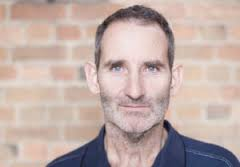

Steve Baxter is an investor and entrepreneur from Brisbane, Australia. He is one of the 'sharks' on the Australian television series Shark Tank.
Steve Baxter was born in the remote town of Cloncurry and raised in Emerald in Queensland's Central Highlands Region. He left school at 15 and joined the Army, enlisting in its apprenticeship program. There, he became an engineer working in the field of electronics, telecoms and guided weapon systems.
In the past three years he has become a major early-stage investor in Australian start-ups, helping to launch a host of companies which together boast a valuation of more than $100 million.
In 1994, at the age of 23, Baxter put his life savings of $11,000 on the line to launch his first start-up, an internet service provider, SE Net, from the spare room of his Adelaidehome.
Servicing more than 35,000 customers, SE Net was eventually acquired by Ozemail/UUNet under the stewardship of its founding Director and now Prime Minister, Malcolm Turnbull.
In 2001, Baxter teamed with schoolmate and Australian technology entrepreneur Bevan Slattery to launch his second start-up, PIPE Networks. On 30 June 2008 Steve resigned as Chief Technology Officer of PIPE Networksand moved to California to work with Google as a Technical Program Manager[2] leading a project to deliver high-speed telecommunications systems across North America. Baxter remained a non-executive director of PIPE Networks until it was later sold to TPG in April 2010.
In March 2012 Baxter launched River City Labs in Brisbane,a leading co-working community to encourage entrepreneurs in Queensland. In 2013 he co-founded Right Pedal Studios, a mobile gaming accelerator, and StartupAUS an advocacy group for Australian tech startups.
In 2014 and 2015, Baxter funded the Startup Catalyst program, in which 20 young Queenslanders with potential to be the next globally successful tech entrepreneurs, are sent to San Francisco to be emerged in the startup and entrepreneurial culture. Says Baxter of the program, "I love the term 'startup ebola.' It speaks to the contagious nature of what we are trying to do. We want the 20 young people we took this year to infect another 20 each on their return